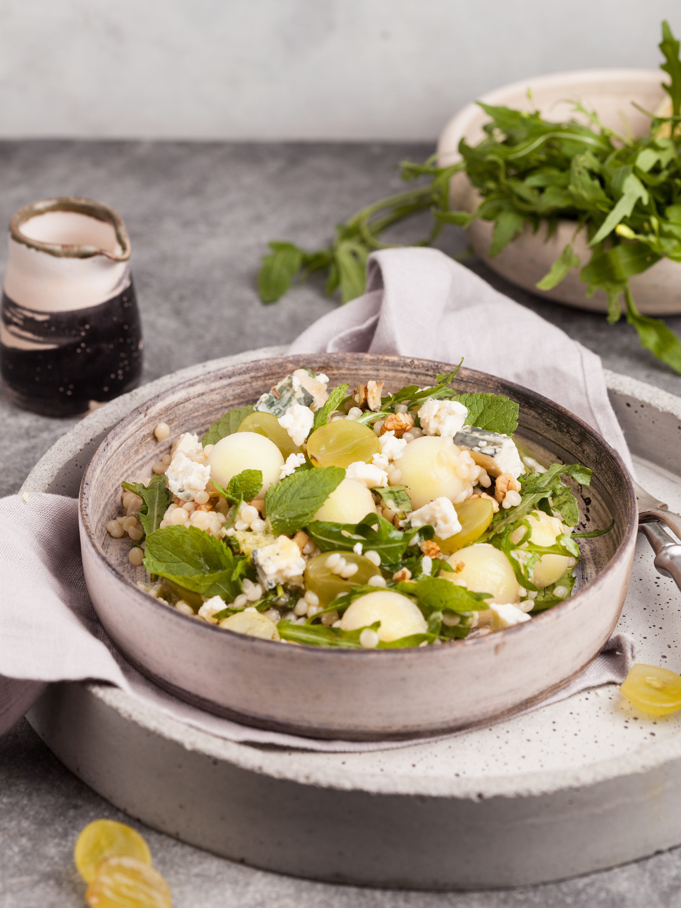
Chicken salad with grapes and pine nuts
turkish chicken nuts grapes salad capers
➤ Chicken drumstick - 1 piece.
➤ Seedless grapes - 1 ½ cups
➤ Pine nuts - 3 tbsp
➤ Capers - 2 tbsp
➤ Lettuce leaves
➤ Yogurt, mayonnaise, Dijon mustard
➤ Salt, pepper
Cut the chicken into thin strips.
Halve each grape. Combine the chicken, grapes, and capers in a salad bowl.
Toast the pine nuts in a dry skillet until golden brown.
Prepare the dressing by whisking yogurt, mayonnaise, and mustard together. Season with salt and pepper to taste.
Place lettuce leaves at the bottom of a salad bowl or plate. Add the salad mixture, drizzle with the dressing, and sprinkle with toasted nuts.

Spanish-Style Chicken
spanish chicken olives hot dish
➤ 1 kg chicken thighs
➤ 1 tbsp honey
➤ Yellow and red bell peppers
➤ 1/2 lime
➤ 1/2 can of pitted olives
➤ Garlic, onion
➤ Paprika, oregano, salt, pepper
Prepare the Marinade: Crush the garlic and mix it with salt, pepper, paprika, and oregano. Add honey, olive oil, and lime juice. Mix everything well.
Marinate the Chicken: Pour the marinade over the chicken. Coat the chicken pieces thoroughly and leave them to marinate for at least 1 hour.
Slice the onion and bell peppers. Add them to the marinated chicken along with the olives and mix well. Place the mixture in an oven preheated to 200°C (392°F) and bake for 1 hour.

Eggplants baked with vegetables and minced meat
russian eggplants tomatoes cheese hot
➤ 4 small eggplants (600 g)
➤ 300 g mixed minced meat
➤ 2 onions (150 g)
➤ 1 bell pepper (150 g)
➤ 2-3 tomatoes (300 g)
➤ 75 g hard cheese, mozzarella (50%)
➤ 2 tbsp vegetable oil
➤ Salt, pepper, garlic
Wash the eggplants, cut them in half lengthwise, and remove the flesh. Salt the halves and let them sit for 30 minutes.
Finely chop the onion and garlic. Dice the tomatoes. Remove seeds from the pepper and chop it finely.
Sauté the onion, garlic, minced meat, tomatoes, and pepper until cooked.
Fill the eggplant halves with the mixture, sprinkle with grated cheese, and bake in a preheated oven at 180°C (350°F) for 30 minutes.

Pumpkin Cream Soup
american pumpkin soup
➤ 1 kg pumpkin
➤ 1 onion
➤ 1 carrot
➤ 1 liter vegetable broth or water
➤ 3 garlic cloves
➤ Salt, pepper, olive oil
Peel and remove the seeds from the pumpkin, then cut it into medium cubes. Finely chop the onion, garlic, and carrot.
Sauté the onion, garlic, and carrot in olive oil until half-cooked.
Add the pumpkin and lightly sauté it, then simmer for 5 minutes.
Add enough water to cover the vegetables. Cook the soup on low heat until the pumpkin becomes soft.
Blend the cooked soup with an immersion blender until smooth.

American Burger
american cheese burger ground meat tomato cucumber
➤ 3 burger buns
➤ 400 g ground meat
➤ 30-50 g hard cheese
➤ 1-2 tomatoes
➤ 1 pickled cucumber
➤ Lettuce leaves and onion
➤ Mayonnaise and ketchup
➤ Salt and pepper
Season the ground meat with salt and pepper to taste, then shape it into a patty. Fry it for 4-5 minutes on each side. Place a thin slice of cheese on top of the patty while it's still hot to melt.
Slice the tomatoes into rings, the cheese into thin slices, and the pickled cucumber into thin circles. In a separate bowl, mix mayonnaise and ketchup together for the sauce.
Cut the burger buns in half and spread the mayonnaise-ketchup sauce on both sides. Add lettuce leaves, onion, tomato, the cooked patty, cucumber, and cheese.
Cover with the top half of the bun.

Italian Pizza
italian tomatoes cheese pizza
➤ 300 g wheat flour
➤ 15 g fresh yeast
➤ 300 g cherry tomatoes
➤ 2 sweet peppers
➤ 350 g mozzarella cheese for pizza
➤ 100 g grated cheese
➤ 2 tbsp basil leaves
➤ Olive oil, sugar, salt, pepper
Dissolve the yeast in 3 tablespoons of warm water. Sift the flour and make a well in the center. Add sugar, salt, and the yeast mixture, and mix. Let it rise for 15 minutes. Add 100 ml of warm water and 2 tablespoons of olive oil, then knead the dough. Cover with a cloth and let rise in a warm place for 1 hour.
Divide the dough into 4 round bases and place them on a baking sheet. Brush each base with olive oil. Top with halved cherry tomatoes, mozzarella, sweet peppers, grated cheese, salt, and pepper. Bake in the oven for 20 minutes. Once done, sprinkle with basil.
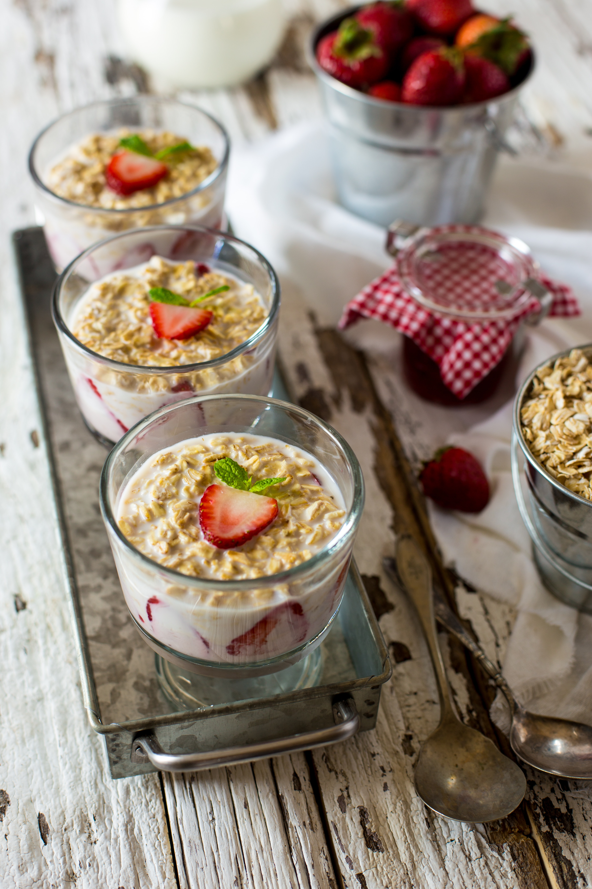
Strawberries with Cream
american strawberries cream dessert
➤ 4 sugar cookies
➤ 1-2 tbsp sugar
➤ 2-3 handfuls of strawberries
➤ 50-80 g whipped cream
Crush the cookies into crumbs and divide them among serving glasses.
Add sugar to the strawberries and mash with a fork, leaving some pieces intact.
Spoon the mashed strawberries over the cookie crumbs, then evenly spread whipped cream on top.
Add the remaining whole strawberries, finishing with a final layer of whipped cream.
Garnish with strawberry halves and fresh mint leaves.
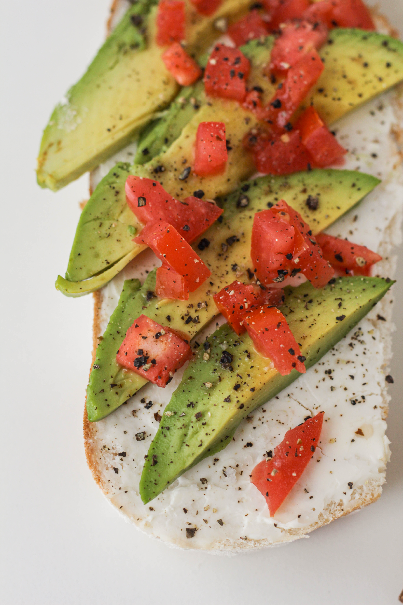
Bruschetta with Tomatoes and Avocado
italian tomatoes avocado snack bruschetta
➤ Baguette (bread)
➤ Lemon juice
➤ 100 g tomatoes
➤ 1 avocado
➤ Basil
➤ Olive oil
➤ Salt, pepper
Slice the baguette into pieces about 1.5 cm thick and toast them in a dry pan on both sides until golden brown.
Chop the tomatoes into small pieces, finely chop the basil, and dice the avocado. Drizzle lemon juice on the avocado immediately to prevent browning.
In a bowl, combine the tomatoes, avocado, and basil. Add salt, pepper, and drizzle with olive oil. Gently mix. Spoon the vegetable mixture onto the toasted baguette slices.

Georgian Lentil Soup
georgian lentil soup
➤ 400g lentils
➤ 100g olive oil
➤ 400g potatoes
➤ 140g onions
➤ 200g tomatoes
➤ Salt and pepper to taste
Soak the lentils in cold water for several hours. Then, transfer them to a pot and cook.
Slice the potatoes into medium-thick half-rings and add them to the lentil mixture while cooking. Sauté the onions in olive oil with the tomato pulp, then add to the soup and continue cooking.
The soup is ready when the potatoes and lentils are soft. Add salt and pepper to taste.
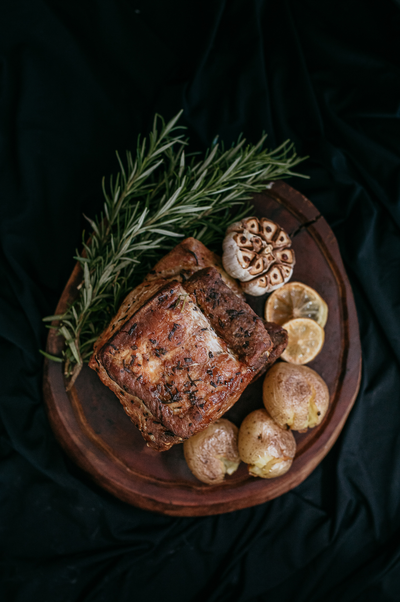
Roast Lamb with Herbs
georgian lamb hot
➤ Lamb
➤ 2 sprigs rosemary
➤ 4 sprigs thyme
➤ 4 sprigs parsley
➤ Olive oil
➤ 4 garlic cloves
➤ Orange and lemon zest
Finely chop the herbs. Mix them with olive oil, salt, and pepper. Marinate the lamb in the herb-oil mixture for 2 hours.
Grease a baking dish with oil, place the lamb in it, and season with garlic and citrus zest. Cover with foil and roast in a preheated oven at 220°C (428°F) for 30 minutes.
After 30 minutes, remove the foil and continue roasting for another 45 minutes, basting occasionally with the juice.
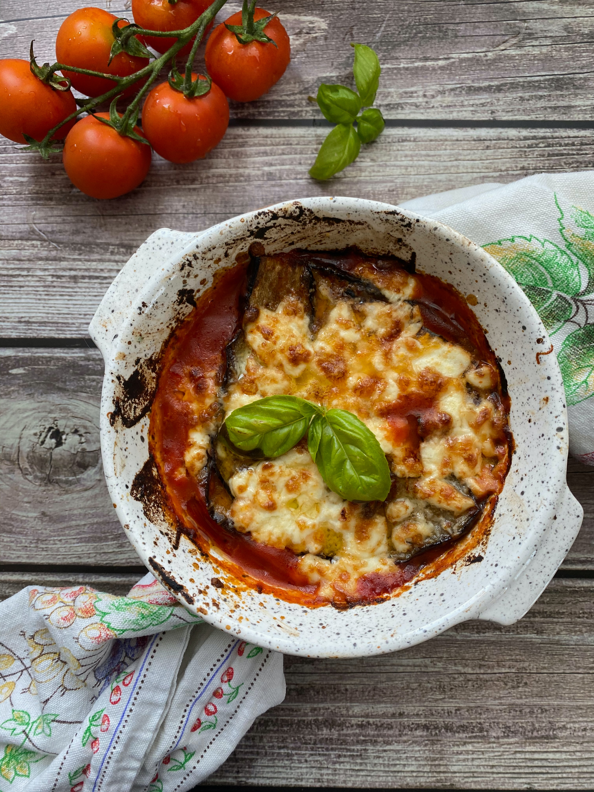
Lasagna
Italian lasagna cheese hot minced meat
➤ Lasagna sheets - 250 g
➤ Ground beef - 450 g
➤ Onion, carrot - 1 each
➤ Tomato sauce - 60 g
➤ Butter - 60 + 30 g
➤ Flour - 60 g, milk - 800 ml
➤ Parmesan cheese, nutmeg, salt, pepper
In a pan, melt the butter, add the flour, and gradually pour in the hot milk. Season with salt and nutmeg.
Sauté the onion, then add the carrot and cook for about 5 minutes. Add the ground beef, season with salt and pepper, and cook for 10 minutes. Stir in the tomato sauce and tomato paste.
Spread a portion of the béchamel sauce on the bottom of the baking dish. Place a lasagna sheet on top, then add a layer of Bolognese sauce. Pour some béchamel sauce over it and sprinkle with grated Parmesan. Repeat the layers.
For the top layer, pour béchamel sauce and sprinkle with Parmesan. Bake for 40 minutes at 180°C (350°F).
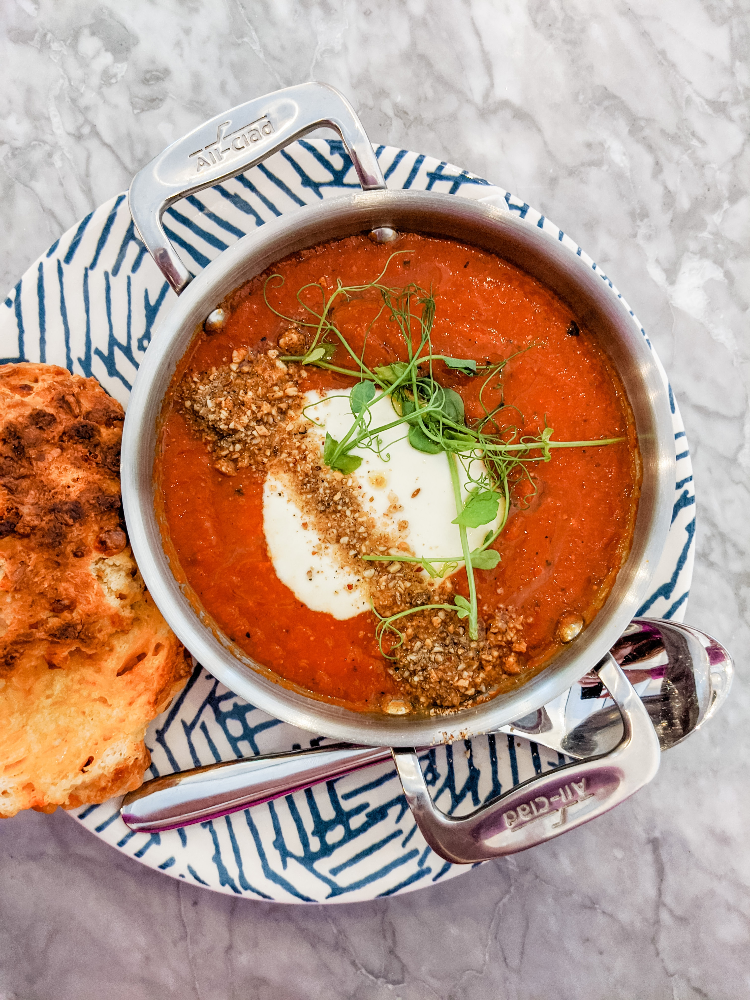
Gazpacho
spanish tomato soup gazpacho
➤ Bell peppers - 3 pcs
➤ Tomatoes - 1-1.5 kg
➤ Onion - 1 pc
➤ Garlic - 3-4 cloves
➤ Ciabatta - 3 slices
➤ Wine vinegar - 2 tbsp
➤ Salt, pepper
Roast the sweet bell peppers for 10-15 minutes, then peel the skins off the tomatoes and peppers.
Combine the tomatoes with the chopped onion, garlic, and roasted bell peppers. Blend everything with a blender.
Add a few slices of ciabatta, wine vinegar, salt, and pepper, and blend again until smooth.
Chill in the refrigerator for a couple of hours, and the cold tomato soup, gazpacho, is ready to serve.
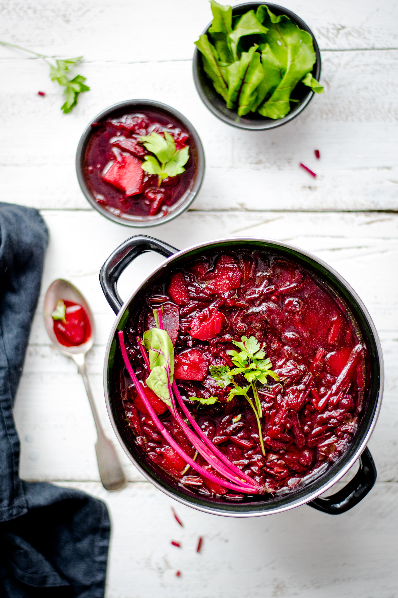
Classic Borscht
russian soup borscht
➤ Beef - 500 g
➤ Potatoes - 500 g
➤ White cabbage - 500 g
➤ Beets - 300 g
➤ Carrots - 300 g
➤ Onion - 2 pcs
➤ Tomato paste - 2 tbsp
➤ Prunes - 5 pcs
Simmer the beef on low heat for 1.5 hours. Cut the potatoes into large chunks, slice the beets into thin strips, shred the cabbage, grate the carrots on a coarse grater, and dice the prunes.
Sauté the onion and carrots, then add the tomato paste.
In the meat broth, add the potatoes, beets, cabbage, and the sautéed onions and carrots. Stir in the prunes, season with salt, and cook the borscht until the potatoes are tender, about 20-25 minutes.

Kuksi
korean noodle soup kuksi
➤ Half a head of cabbage
➤ 0.5 kg fresh cucumbers
➤ 400-500 g lean beef
➤ Thin, long noodles
➤ Seasonings
Cut the beef into strips about 4-5 cm long and fry in a pan. Add onion sliced into half rings, pour in water to a depth of 1.5-2 cm, cover with a lid, and simmer for 40 minutes.
In a pot, mix two tablespoons of salt, sugar, finely chopped tomato, a couple of cucumbers, one tablespoon of vinegar, and soy sauce. Add chopped vegetables to the pot and crush garlic into the mix.
Shred the cabbage finely, place it in a bowl along with cucumbers and tomatoes, and pour hot oil over the mixture.
In a large bowl, place a nest of noodles, pour over it with kuksi-muri (broth), add the vegetable mixture, and top with a couple of spoonfuls of beef.

Shrimp and Mushroom Ramen
japanese noodle soup shrimp mushrooms champignons
➤ Noodles - 2 packs
➤ King prawns - 250 g
➤ Mushrooms (champignons) - 150 g
➤ Ginger, garlic, soy sauce
➤ White wine, honey
➤ Chicken broth
➤ Eggs, processed cheese
Sauté the mushrooms until golden brown, then add a splash of rice vinegar. Prepare the sauce by grating ginger and garlic on a fine grater. Place the mixture in a bowl, and add soy sauce, honey, sweet chili sauce, and chicken broth.
Slice the green onions into thin strips. Add them to the mushrooms along with the shrimp and stir-fry for 1.5 minutes. Add cooked noodles and mix well. Pour in the sauce.
Serve the ramen in bowls and top each with half a boiled egg.

Margherita Pizza
italian pizza cheese tomatoes margherita
➤ Wheat flour - 1.5 cups
➤ Dry yeast - 1 tsp
➤ Sugar - 1 tsp
➤ Water - 0.5 cup
➤ Cherry tomatoes - 8 pcs
➤ Tomato paste
➤ Mozzarella cheese - 200 g
Heat the water to 37-40°C (98-104°F). Dissolve the sugar in it and add the yeast. Let it sit in a warm place for 5-15 minutes to activate the yeast. Add salt, 2 tablespoons of olive oil, and mix until smooth. Gradually add the flour and knead the dough thoroughly.
Sauté garlic, add tomato paste, and chopped basil to prepare the sauce.
Flatten the dough into a round shape with your hands, 3-5 mm thick. Leave the edges slightly thicker to form a crust. Spread the sauce over the base, evenly distribute the mozzarella, and place halved cherry tomatoes on top. Bake for 10-15 minutes at 220°C (430°F).

Philadelphia Pizza
Italian pizza philadelphia cheese
➤ Olive oil - 20 ml
➤ Cherry tomatoes - 70 g
➤ Philadelphia cheese and Parmesan - 70 g
➤ Lightly salted salmon - 80 g
➤ Basil
➤ Flour - 160 g
➤ Mineral water - 75 ml
➤ Dry yeast - 1 g
In room-temperature water, dissolve salt, sugar (use half the amount of salt), and yeast. Add all the flour at once. Midway through kneading, add olive oil. Knead thoroughly. Let the dough rest in the refrigerator for 24 hours.
Roll out the prepared dough to a thickness of no more than 5 mm. Lightly brush with olive oil, evenly spread Philadelphia cheese, add halved cherry tomatoes and Parmesan. Bake in the oven for 7-8 minutes at 300°C (570°F).
Before serving, garnish with fresh basil leaves, slices of salmon, and drizzle with olive oil.
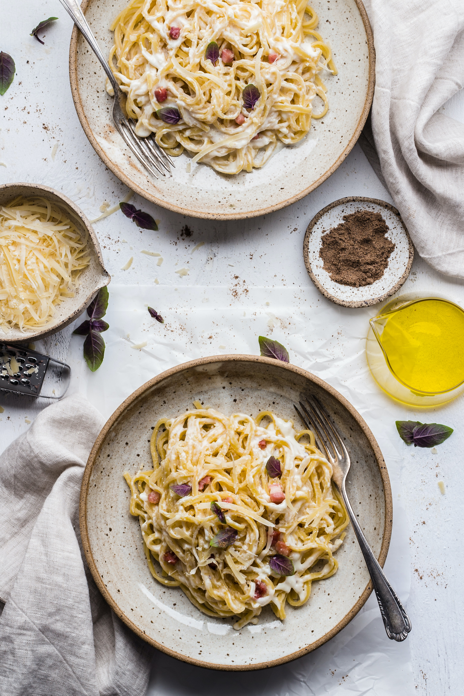
Pasta Carbonara with Bacon and Cream
Italian pasta bacon cheese egg hot carbonara
➤ Dry pasta - 100 g
➤ Bacon or pancetta - 80-100 g
➤ Parmesan cheese - 50 g
➤ Cream (10-20%) - 130 g
➤ Egg - 1 pc
➤ Pepper, garlic
Heat the cream and add a beaten egg (you can whisk it lightly with a fork) along with grated cheese. Mix well.
Add the cooked pasta to the prepared sauce and stir to combine.
Serve the pasta on plates, top with crispy fried bacon, sprinkle with pepper, and add more grated cheese on top.

Pasta with Smoked Sausages
russian pasta sausages cheese hot
➤ Pasta - 200 g
➤ Smoked sausages - 100 g
➤ Tomato - 180 g (1 pc)
➤ 20% cream - 150 ml
➤ Hard cheese - 100 g
➤ Onion, garlic, basil
Chop the garlic, dice the onion, slice the sausages into rounds, and peel and dice the tomato.
Sauté the onion, garlic, and smoked sausages for 3-4 minutes.
Add the diced tomato to the pan and cook with the onion, garlic, and sausages for 1-2 minutes.
Pour in the cream, add basil, salt (0.5 tsp), and pepper. Cook for 7-8 minutes.
Add the cooked pasta and cheese to the sauce, and mix well.

Carrot Salad with Olives and Feta Cheese
korean salad carrot olives feta cheese
➤ Carrot: 185 g
➤ Feta Cheese: 150 g
➤ Pitted Olives: 100 g
➤ Lettuce Leaves
➤ Garlic: 15 g, Sugar: 10 g
➤ Lemon Juice: 20 ml, Olive Oil: 30 ml
➤ Basil, Oregano
In a large bowl, mix lemon juice, olive oil, dried oregano, basil, sugar, ground black pepper, salt, and minced garlic to prepare the dressing.
Grate the carrots using a grater for Korean-style carrots, and combine them with chopped olives, diced feta cheese, and lettuce leaves.
Pour the dressing over the mixture, toss well, and refrigerate for 10-15 minutes before serving.

Baked Trout in Sauce
japanese fish trout
➤ 300 g of fresh trout
➤ 200 ml of heavy cream
➤ 30 g of butter
➤ 10 g of wheat flour
➤ 1 lemon
➤ 1 tablespoon of shredded coconut
Squeeze lemon juice over the trout fillet, sprinkle with salt, and let it marinate. Heat a frying pan and briefly sear the trout (about 1 minute per side), carefully flipping it.
In a saucepan, melt the butter, add the flour, and sauté until golden. Pour in the cream, add salt, bring to a boil, and simmer for 6-7 minutes. Remove from heat and mix in 2 teaspoons of lemon juice.
Pour half of the sauce into a baking dish, lay the seared trout fillets on top of the sauce.
Sprinkle each piece of fish with shredded coconut and a bit of pepper. Bake in a preheated oven for 5-6 minutes.
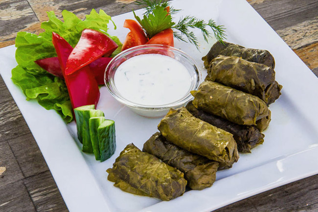
Dolma
turkish meat dolma rice lamb
➤ 220 g of grape leaves
➤ 700 g of minced lamb
➤ 100 g of lamb fat
➤ 100 g of partially cooked rice
➤ 350 g of diced onions
➤ For the sauce: 300 ml of yogurt (or matsoni), 4 garlic cloves, fresh parsley and cilantro
Combine the minced lamb, partially cooked rice, sautéed onions, diced lamb fat, chopped fresh herbs, and spices. Mix well and add water to create a moist mixture. Place a teaspoon of the filling on a grape leaf and roll it into a tight tube. Repeat for all leaves.
Line the bottom of a pot with an inverted plate, arrange the rolled dolmas seam-side down in layers. Press with another plate on top, add water with salt, and simmer for about an hour.
Mix yogurt with minced garlic, finely chopped parsley, and cilantro. Serve the dolma hot with the prepared sauce.
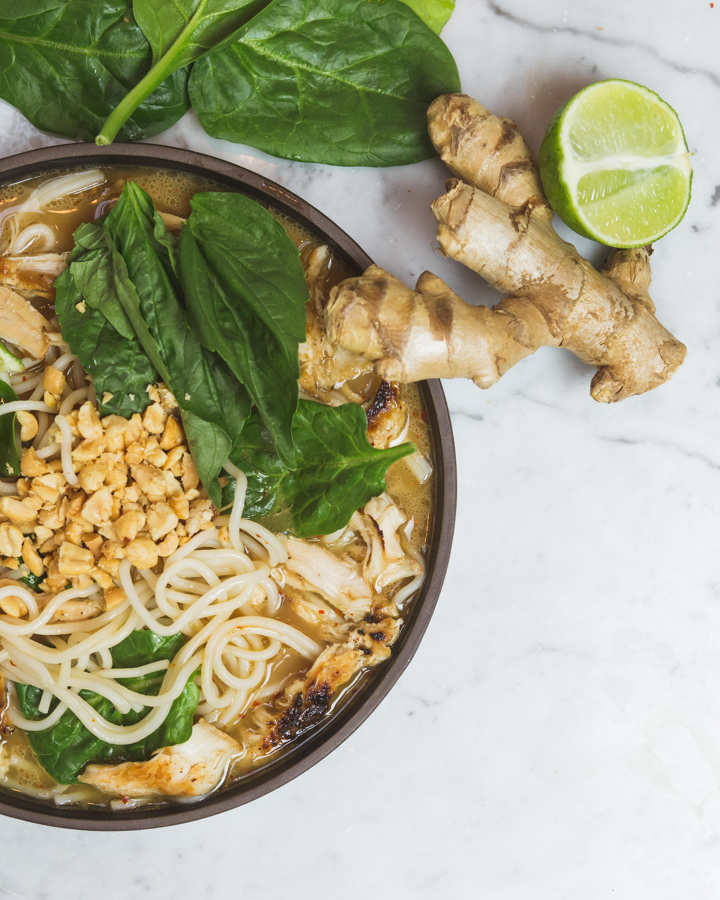
Pad Thai
thai padthai noodle shrimp
➤ Shrimp - 200 g
➤ Wheat udon noodles - 200 g
➤ Classic tofu - 100 g
➤ Bell pepper, carrot, onion - 1 piece each
➤ Teriyaki sauce and hot sauce - 2 tablespoons each
➤ Mung bean sprouts - 50 g
➤ Peanuts, ginger, garlic, radish
Slice the onion into thin feathers, julienne the carrot and bell pepper, and cut the radish into quarters. Mince the garlic and grate the ginger.
Heat a skillet and stir-fry the onion, carrot, garlic, and ginger for about 30 seconds. Add the bell pepper and radish to the pan.
Pour in teriyaki sauce and hot sauce, stirring to combine. Add the shrimp and cook until they turn pink. Mix in diced tofu and peanuts, then remove the skillet from the heat.
Toss in the mung bean sprouts and squeeze juice from half a lime over the dish. Add the cooked noodles to the skillet, combine well, and serve.
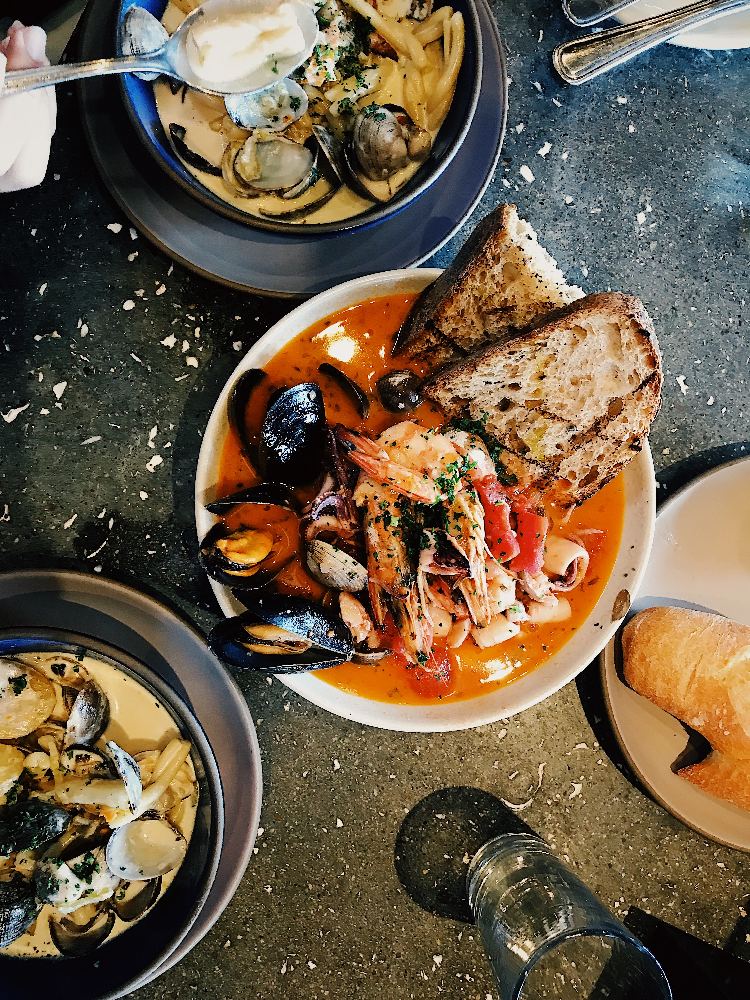
Barcelona-Style Paella
spanish rice hot paella shrimp squid mussels
➤ 8 large shrimp
➤ 300 g of squid and mussels
➤ 400 g of round-grain rice
➤ Half a cup of olive oil
➤ 1 carrot, 2 tomatoes
➤ 1 large bell pepper
➤ 100 g of frozen green peas
Add carrots, 2 cloves of garlic, bay leaves, and parsley to the shrimp broth. Cook for 30 minutes.
Cut the tomatoes into cubes. Slice the pepper into strips, crush the garlic into a paste. Cut the squid into rings.
In olive oil, place the mussels and cook for 7-10 minutes. Remove the mussels onto a plate. Add the shrimp to the pan and cook for 3 minutes, then transfer to the plate.
Add the squid and tomatoes to the pan, add salt, basil, and garlic, and cook for 5 minutes. Add the bell pepper and peas, cook for 3 minutes. Add the rice, shrimp, and mussels, and cook the rice until ready.
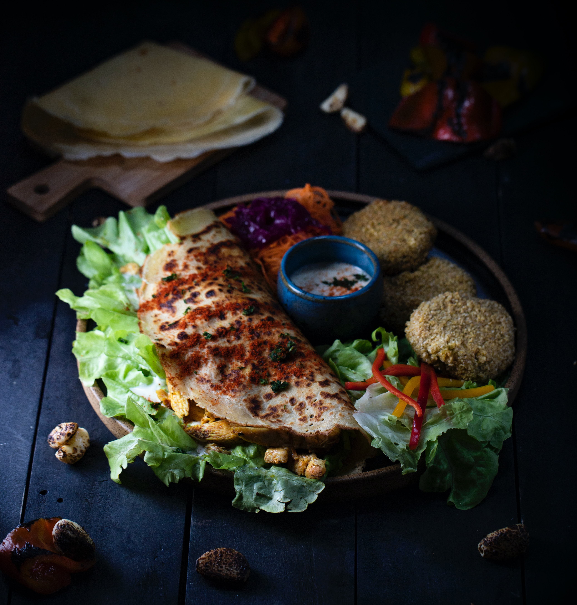
Doner Kebab
turkish kebab meat chicken doner shawarma
➤ Armenian lavash - 1 piece
➤ Chicken fillet - 400 g
➤ Cucumbers, tomatoes - 2 pieces, onion
➤ Cumin, cardamom, turmeric, garlic, paprika
➤ Mayonnaise, coriander, pepper, salt
Grate the chicken breast fillet with crushed spices and vegetable oil, and let it marinate for an hour. Prepare the sauce by mixing mayonnaise with spices, crushed garlic, and salt.
Fry the chicken fillet on a grill pan over high heat for 2-3 minutes on each side, until fully cooked.
Cut the cucumbers into sticks, tomatoes into rings, and red onion into wedges. Slice the cooked chicken meat.
Cut the lavash into rectangles of 20x30 cm. Place cucumbers, tomatoes, chicken meat, and onion on the lavash, and drizzle with the sauce. Fold into an envelope. Quickly grill it on the grill pan. Cut into two parts at an angle and serve!

Roll with Eel and Avocado
Japanese, sushi, roll, fish, rice, eel, avocado, trout
➤ Sushi rice – 200 g
➤ Lightly salted trout – 150 g
➤ Smoked eel – 70 g
➤ Nori sheets – 4 pcs
➤ Avocado, cucumber – 1 pc each
➤ Rice vinegar – 2 tbsp
➤ Sesame seeds, salt, greens
Combine sugar, vinegar, and salt. Pour the mixture into the cooked rice. Add rice vinegar to water. Wet the spoon, knife, and hands to prevent the rice from sticking.
Cut the nori sheet in half. Place rice on the nori. Spread it in a thin layer over the sheet. Before adding the filling, use a sushi mat to flip the nori so the rice faces down. Place the filling on the nori. Roll it tightly into a cylinder using the sushi mat for help.
Slice the fish into thin slices. Arrange the slices into a square, piece by piece. Place the roll on the fish slices and wrap it using the sushi mat. Roll the completed sushi in sesame seeds. Cut into portions and serve.
Adjarian Khachapuri
Georgian egg cheese pastry
➤ 650g flour
➤ 1 tsp baking soda
➤ 450 ml matsoni (fermented milk)
➤ 2 eggs
➤ 70 ml vegetable oil
➤ 1 kg cheese, 20 g butter
➤ 6–7 eggs for the filling
Sift half of the flour and mix it with the baking soda and matsoni. Beat the eggs with salt and add them to the mixture. Gradually pour in the oil and sift the remaining flour. Knead the dough thoroughly and let it rest in a warm place for 40–45 minutes.
Grate the cheese on a coarse grater. Add water or 1 beaten egg for a creamier consistency.
Roll out the dough into oval shapes. Place some cheese along the edges of each oval. Roll the edges towards the center and pinch the sides to form a "boat" shape. Spread the cheese filling inside. Bake the khachapuri at 250°C (480°F) for 15 minutes.
Towards the end of baking, crack an egg into the center of each khachapuri and finish baking until the egg is just set.